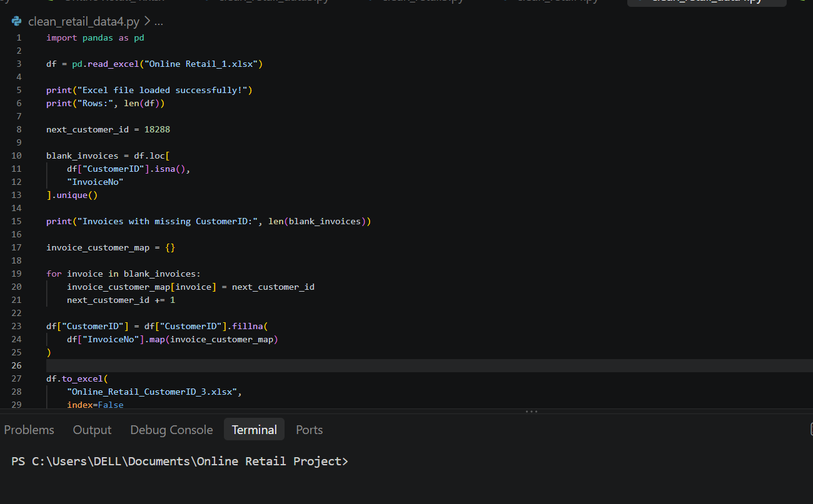
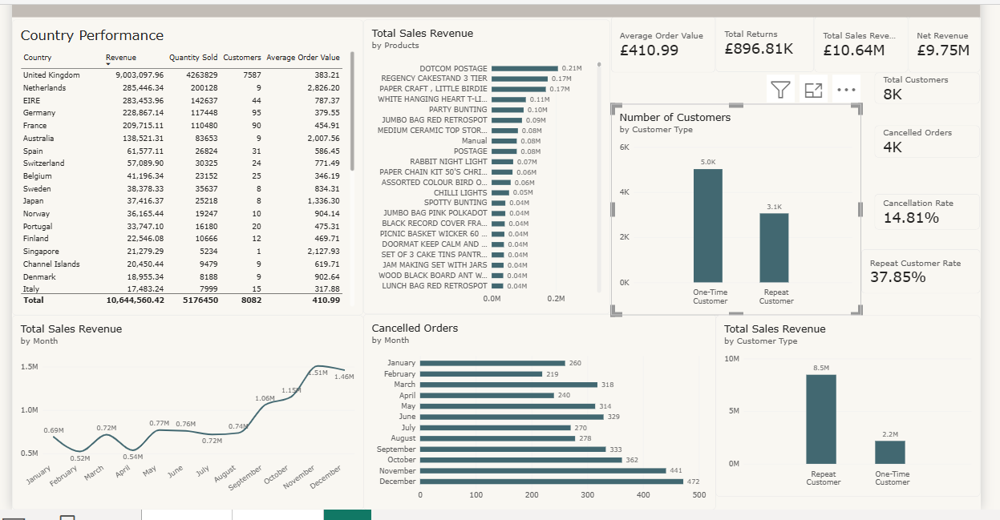
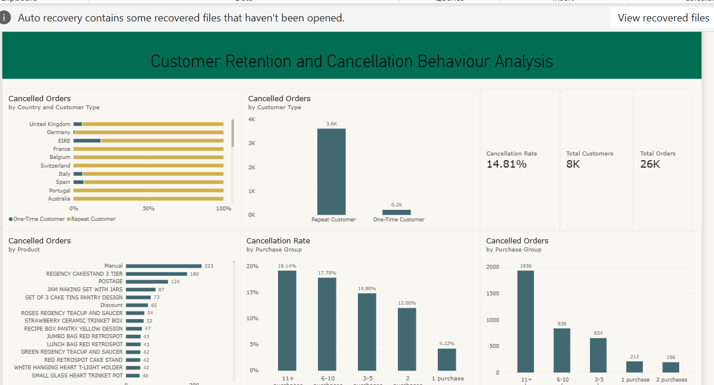

Data Cleaning In SQL
In this project we take raw housing data and transform it in SQL Server to make it more usable for analysis.

Data Analyst well versed in Python, SQL, and Power BI, my work spans analytics, information Security and entrepreneurship, with a focus on turning raw information into decisions people can act on. I work with Python, SQL, Power BI and Excel and I grauduated from the University of Nigeria, Nsukka with a Bsc in Computer Science/Statistics. @nigidev
In this project we take raw housing data and transform it in SQL Server to make it more usable for analysis.

An online retailer wants to better understand customer purchasing behavior and order cancellations. Although repeat customers represent a smaller proportion of the customer base, they may generate a larger volume of transactions and cancellations because they purchase more frequently. I analyzed over 500,000 transactions to understand customer purchasing behaviour, revenue contribution, and order cancellation patterns.

The dataset was cleaned and prepared using Python and Pandas before being analyzed in Power BI. The data preparation process included: Handling missing product descriptions, Matching missing descriptions using StockCode where possible, Cleaning inconsistent product description values, Preparing customer information for analysis, Identifying cancelled transactions using the invoice number convention, Preparing calculated fields and measures for customer segmentation and cancellation analysis, Customer Purchasing Behaviour.

The Power BI dashboard provides an overview of sales performance, customer purchasing behavior, and cancellation activity. It allows users to examine revenue, orders, customer frequency, repeat versus one-time customers, and cancellation behavior. The main KPIs are: Total Revenue, Total Orders, Total Customers, Repeat Customers, One-Time Customers, Cancelled Orders Cancellation Rate.

This is the portfolio Summary of Online Retail Customer Behavior Cancellation Analysis.